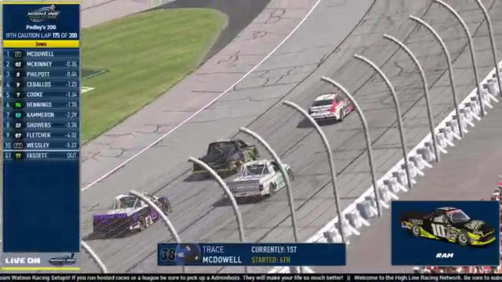

Trace McDowell
Team assignment not stated in the structured owner record.
AN OFFICIAL-TAPE FOOTPRINT, NOT A RESULTS CLAIM
- Official files
- 2
- Central editions
- 0
- Exact tape cues
- 8
- Accepted podiums
- 0
Trace McDowell appears in 2 official HLRN broadcast files across Season 2. The current result ledger does not assign this driver a supported top-three finish. A consistently stated team affiliation remains open for owner review. The currently indexed source window runs from June 29, 2026 through July 13, 2026.
The primary chapter index supplies 8 direct jump points. No repeat track fingerprint is yet supported. The densest direct-tape categories are incident (2 cues) and battle (2 cues). Those counts describe where the name is easiest to find; they are not fault, pace, or performance grades. A source-attributed car frame is published with its original video and timestamp. That is the current discovery map for Trace McDowell.
Official name signals are used for discovery only. They do not become starts, points, incident counts, or an ability grade. This page is deliberately detailed about the tape and restrained about the unavailable competition record. No Highline Live bonus file is currently attached to this identity. The displayed name is labeled broadcast graphic confirmed; that status remains visible so an owner roster can strengthen or correct the identity without rewriting the evidence trail. Those boundaries define Trace McDowell's public HLRN file.
8 featured race-tape cues
These are discovery routes into complete HLRN broadcasts, not performance grades or inferred results.
- S2 / R2 · STAGE
A stage-scoring discussion at Iowa
S2 / R2 at 1:51:42: The broadcast enters a stage-scoring discussion at Iowa with Trevor Haley, Trace McDowell, and Jason Branch in the scoring call. The clip preserves the on-air timing or points call without promoting it into a complete stage result; the accepted feature result ledger remains separate.
Iowa - S2 / R3 · BATTLE
Bryce Hinton brushes the wall during a pass before a separate yellow
Bryce Hinton completes a Helix-versus-Darkhorse pass despite brushing the wall. A yellow then appears for a separate Trace McDowell incident, which HLRN queues after finishing the pass replay.
Chicagoland - S2 / R2 · BATTLE
Trace McDowell and Joshua McKenna carry the Iowa lead battle
S2 / R2 at 2:37:42: The Iowa pack compresses in a front-pack fight while Trace McDowell, Joshua McKenna, and Jared Philpot are named on the call. The chapter keeps the live battle intact and makes no finishing-order claim.
Iowa - S2 / R2 · RESTART
Matt Brown and Trace McDowell bring Iowa back to green
S2 / R2 at 2:02:27: Matt Brown, Trace McDowell, and Matthew Graham are in the booth's front-pack call as Iowa returns to green. The cut keeps the restart launch and the first lap of lane development together.
Iowa - S2 / R2 · RESTART
Iowa rebuilds its top five after a blinking caution
A blinking car disrupts the timing display as another caution appears. HLRN reads Trace McDowell, Jared Philpot, Joshua McKenna, Cory Cook, and Brian Hennings at the front; those names are the restart order, not an incident list.
Iowa - S2 / R3 · INCIDENT
Joshua Sprag crosses Trace McDowell to trigger Chicagoland's caution
The broadcast moves from Timothy Tyler to leader Trevor Haley when a caution appears. Replay finds Joshua Sprag moving across Trace McDowell's nose; the earlier on-screen drivers are not assigned to the crash.
Chicagoland - S2 / R3 · INCIDENT
Trace McDowell becomes the focus after multiple Chicagoland signals
The caution arrives with separate Eric Hayden and Benjamin Richards damage signals. Replay instead locates Trace McDowell's No. 9, so the card preserves the broadcast's uncertain search rather than merging all three drivers.
Chicagoland - S2 / R2 · QUALIFYING
Trevor Haley heads Iowa's Season 2 grid
HLRN reads the current Iowa lineup with defending champion Trevor Haley on pole, Brandon Showers second, and Matt Brown, Cory Cook, Trace McDowell, and Jared Philpot filling the next two rows.
Iowa
Verified team history is not consistently stated. No position-specific top-three result is currently accepted. The public spelling has broadcast identity support; an owner roster can still add legal-name, number, and team-history detail.